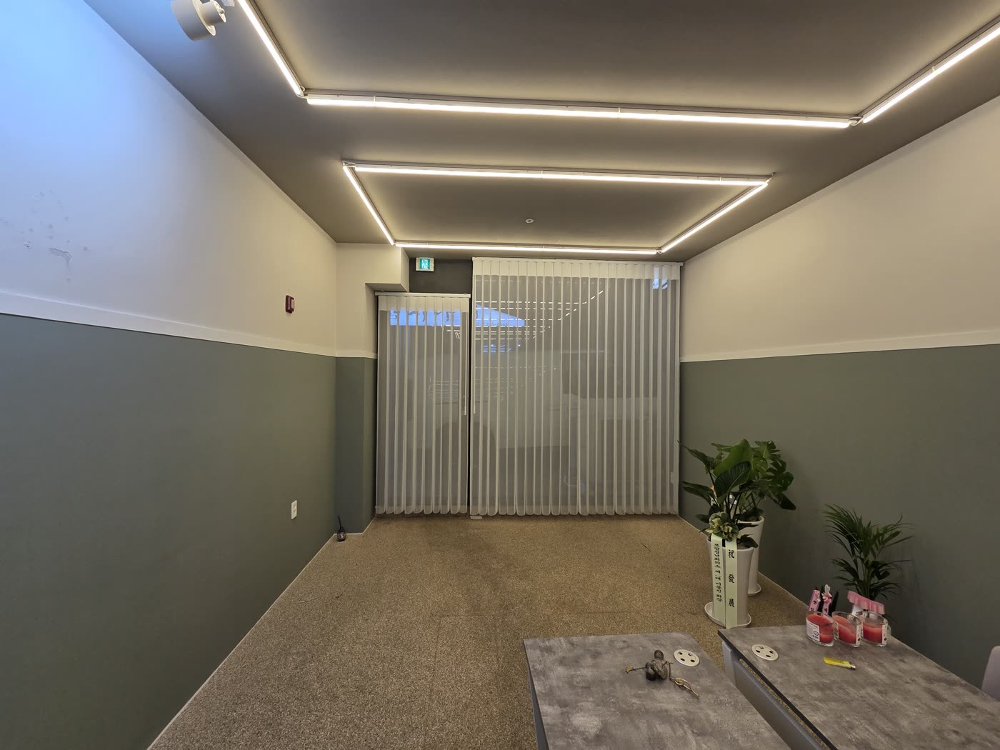
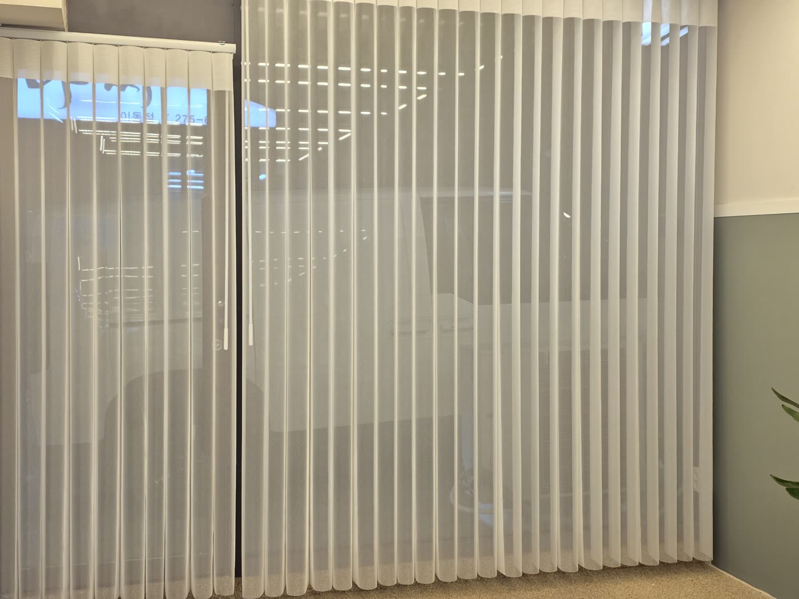

2026년 6월 5일 시공
포항 상가 매장 유니슬랫 시공후기

포항의 신규 개업 매장에 다녀왔습니다.
도로변 통유리 상가 유니슬랫 시공 사례입니다.
통유리 상가의 세 가지 고민
개업을 앞둔 사장님의 고민은 세 가지였습니다.
첫째, 전면이 통유리라 지나다니는 사람들 시선이 매장 안까지 그대로 들어왔습니다.
손님 입장에서는 밖에서 다 보이는 공간이 편할 리 없습니다.
둘째, 도로 방향 창이라 시간대에 따라 햇빛이 깊게 들어와 눈부심이 있었습니다.
그렇다고 빛을 완전히 막으면 매장이 어두워 보이는 문제가 생깁니다.
셋째, 벽면을 투톤으로 칠하고 라인 조명까지 넣어 마감한 공간이라 창가도 인테리어의 일부로 떨어져야 했습니다.
세 가지 조건을 동시에 만족하는 제품으로 화이트 유니슬랫을 권해 드렸습니다.

유니슬랫이 상가에 잘 맞는 이유
유니슬랫은 투명한 망사 원단에 일정 간격으로 패브릭 날개가 세로로 배열된 구조입니다.
날개 각도를 조절하면 빛이 들어오는 양이 달라지고, 닫으면 커튼처럼 부드럽게 시선을 가려 줍니다.
버티컬의 기능과 쉬어커튼의 분위기를 한 제품에 담았다고 보시면 정확합니다.
낮에는 날개를 열어 자연광을 살리면서도 망사가 한 겹 걸러 주어 밖에서 내부가 또렷하게 보이지 않습니다.
영업 중 매장이 어두워 보이지 않으면서 시선은 차단되는 것입니다.
햇빛이 강한 시간대에는 날개 각도만 틀면 눈부심이 바로 잡힙니다.
세로로 떨어지는 라인이 천장을 높아 보이게 해서, 라인 조명이 들어간 이번 매장과는 수직 라인끼리 결이 맞아 특히 잘 어울렸습니다.
날개가 늘 세로로 곧게 떨어져 있어 창가가 흐트러져 보이지 않는 것도 상가에서 좋은 점입니다.
필요할 때는 폭 전체를 한쪽으로 걷어 낼 수 있어 통유리를 시원하게 열어 둘 수도 있습니다.

높이가 다른 창은 두 폭으로 나눴습니다
이번 현장은 창이 하나가 아니었습니다.
메인 통유리와 출입문 쪽 유리의 높이가 달라 한 폭으로 통일하지 않고 구간을 나눠 두 폭으로 분리 시공했습니다.
단 차이가 있는 창을 한 폭으로 덮으면 아래 단이 뜨거나 끌리는데
구간을 나누면 각 창에 정확히 맞아떨어집니다.
출입문 쪽은 문을 여닫는 데 걸리지 않도록 여유 치수를 계산해 레일 위치를 잡았습니다.
상가는 출입 동선이 곧 영업이라, 이 부분은 실측 단계에서 가장 신경 쓰는 포인트입니다.
관리는 한 달에 한 번이면 충분합니다
유니슬랫은 망사 원단 특성상 먼지가 쌓이면 빛 투과가 탁해집니다.
평소에는 먼지떨이로 가볍게 털어 주시고, 날개를 무리하게 손으로 꺾지만 않으시면 형태 변형 없이 오래 쓰실 수 있습니다.
상가처럼 출입이 잦은 공간이라도 한 달에 한 번 정도만 관리해 주셔도 충분합니다.
조작도 간단해서 영업 중에 빛이 바뀌어도 그때그때 바로 대응할 수 있습니다.
개업 준비로 바쁘신 와중에도 창가 마감까지 챙기신 사장님 덕분에 매장이 한결 완성도 있게 마무리됐습니다.
영업 번창하시길 바랍니다.
포항을 포함한 대구·경북 전 지역 상가, 사무실, 아파트 커튼·블라인드 실측과 견적 상담을 도와드리고 있습니다.
궁금하신 점은 편하게 문의 주세요.